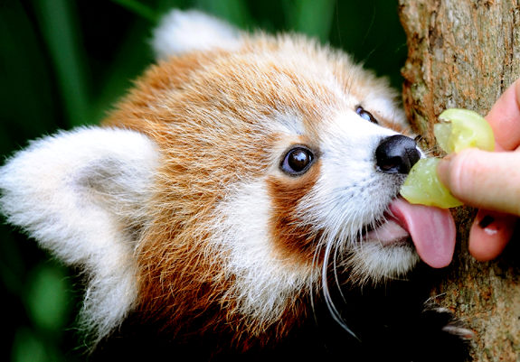

Dieta de los pandas rojos
El panda rojo, a pesar de que pertenece al orden de los mamíferos carnívoros, es preferentemente vegetariano, aunque también es capaz de capturar insectos, gusanos e incluso pequeños vertebrados.
Su alimentación es sobre todo bambú y ocasionalmente pequeños mamíferos, aves, huevos, bayas y otros vegetales. Afortunadamente para la conservación de esta especie se han establecido varias medidas de protección y algunos zoológicos tienen programas de crianza
Comida para pandas rojos
- Frutas
- Bellotas
- Huevos
- Brotes de bambu